쓰레기가 쌓이는 골목으로 안내
플로깅은 대개 걷기 좋은 공원이나 산책로에서 이루어져, 정작 쓰레기가 쌓이는 골목은 정화 대상에서 밀려났습니다. 무단투기 단속 CCTV 공공데이터로 정화가 시급한 구역을 찾고, 그 구역을 지나도록 코스를 생성합니다.
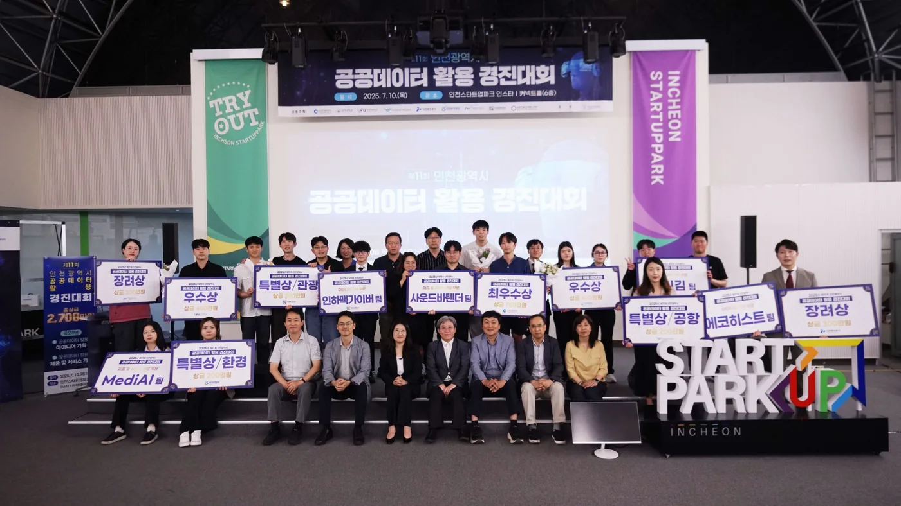
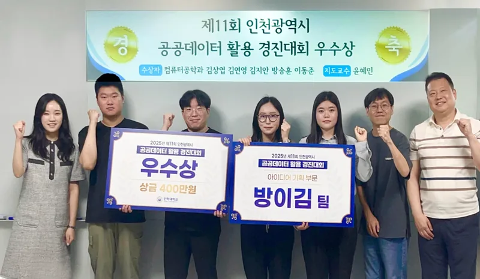
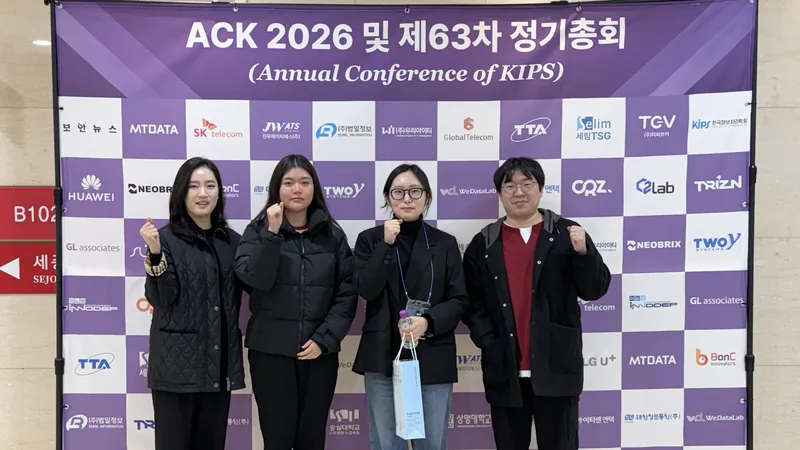
플로깅은 주로 깨끗한 공원에서 이루어졌습니다.
정작 쓰레기가 쌓이는 골목은 아무도 걷지 않았습니다.
그래서 플로고는 무단투기가 잦은 길로 코스를 생성합니다.
플로깅은 대개 걷기 좋은 공원이나 산책로에서 이루어져, 정작 쓰레기가 쌓이는 골목은 정화 대상에서 밀려났습니다. 무단투기 단속 CCTV 공공데이터로 정화가 시급한 구역을 찾고, 그 구역을 지나도록 코스를 생성합니다.
주운 쓰레기를 하나하나 세어 기록하고 인증 글까지 작성하는 과정이 번거로워, 활동 후 기록을 남기지 않는 경우가 많았습니다. 플로고에서는 카메라로 비추면 AI가 종류와 개수를 인식하고, 결과는 그룹에 자동으로 공유됩니다.
지자체 인력과 예산만으로는 모든 골목을 매일 관리하기 어려워 관리 공백이 생깁니다. 시민의 산책 경로를 관리 공백 지역으로 연결해, 걷는 것만으로 지역 환경 관리에 참여할 수 있도록 했습니다.
플로깅이 단발성 활동에 그치는 이유는 꾸준히 참여할 동기가 부족하기 때문입니다. 수거 인증, 포인트 적립, 쿠폰 교환, 뱃지 획득을 하나의 흐름으로 연결해 참여가 계속 이어지도록 했습니다.
앱 홈 화면의 환경 영향력 카드입니다. 누적 온실가스 감축량과 연간 목표 10kgCO₂eq 대비 달성률, 같은 양을 흡수하는 소나무 수를 보여 줍니다.
나의 환경 영향력
예시: 쓰레기 6kg 수거 후 홈 화면 카드
계수 출처는 한국환경공단(폐플라스틱 재활용 시 온실가스 감축량)과 국립산림과학원(30년생 소나무 표준 탄소흡수량)입니다.
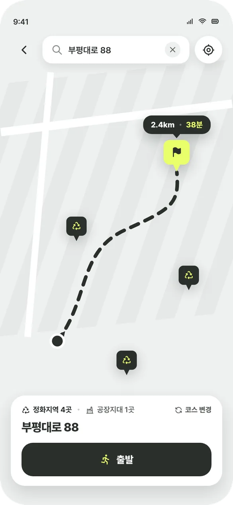
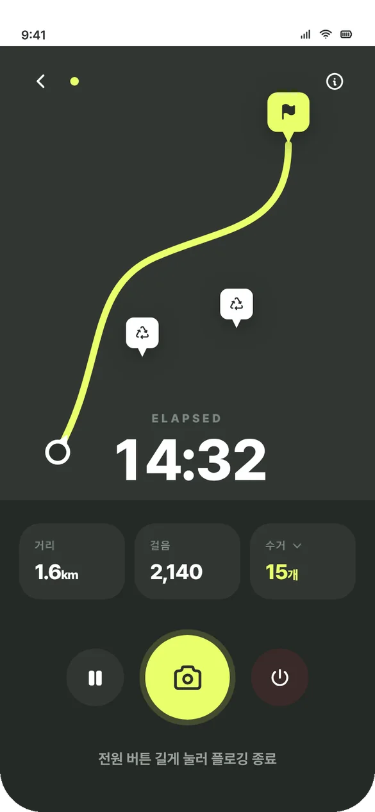
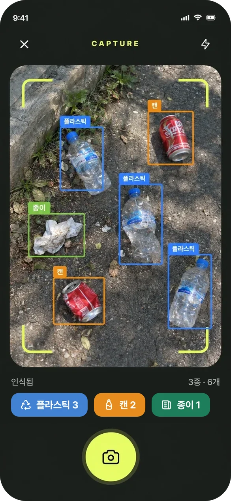
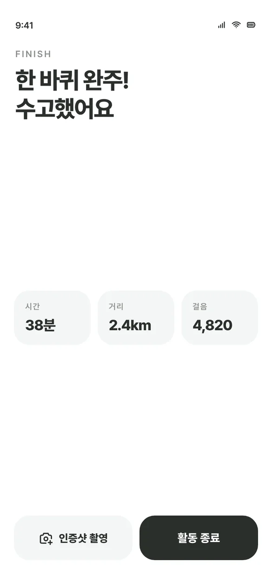
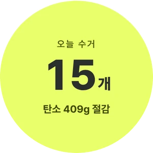
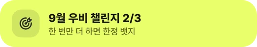
지도에서 도착지를 선택하면 경로 주변의 무단투기 빈발 구역 2곳을 코스에 포함합니다. 오염도가 높은 구역을 우선하고, 우회 거리는 최소화합니다.
인천 9개 군·구 무단투기 단속 CCTV 공공데이터 기반
휴대폰을 주머니에 넣고 걸어도 거리, 시간, 걸음 수, 칼로리가 계속 기록됩니다. 걸음 수와 칼로리는 이동 거리와 시간으로 산출합니다.
주운 쓰레기를 바닥에 놓고 비추면 종류별 개수를 바로 알려 줍니다. 촬영할 때마다 개수가 이번 활동 기록에 합산됩니다.
플로깅을 마치면 기본 포인트에 수거 개수만큼 포인트를 더해 적립합니다. 목적지까지 완주하면 보너스 포인트가 추가됩니다.
최단 경로가 아닌 정화 중심의 경로입니다. 출발지와 도착지 사이의 무단투기 빈발 구역 2곳을 경유하고, 공장지대 같은 회피 구역은 우회하는 보행 코스를 생성합니다.
출발지와 도착지를 두 초점으로 하는 타원(기본 1.5km) 안의 핫스팟을 후보로 추립니다. 단속 CCTV 대수와 반경 200m 내 인접 CCTV 수로 매긴 오염도 점수에서 우회 거리를 뺀 종합 점수가 가장 높은 2곳을 선정합니다.
수거한 쓰레기를 직접 입력할 필요가 없습니다. AI 허브의 생활폐기물 이미지 데이터셋으로 파인튜닝한 YOLOv8n 모델이 0.7초마다 화면을 분석해 종류와 개수를 인식합니다. 촬영 후에는 확인 시트에서 개수를 수정할 수 있습니다.
5가지 분류 색
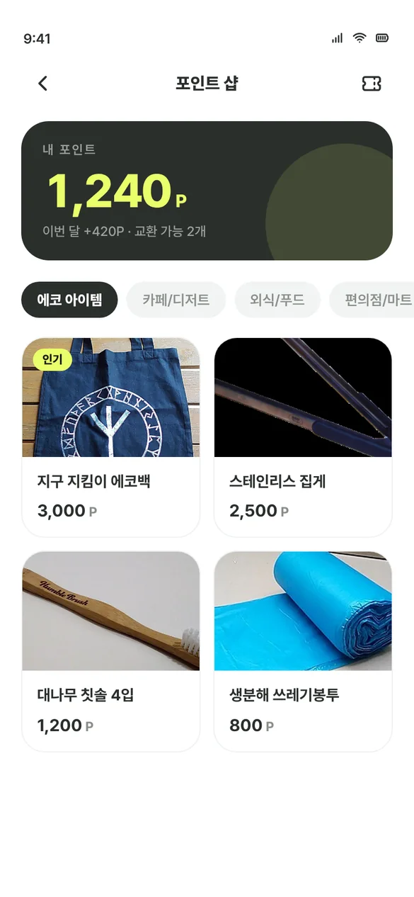
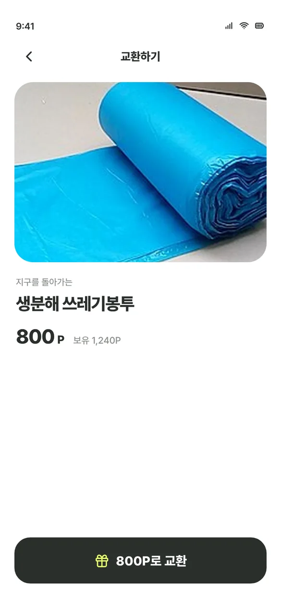
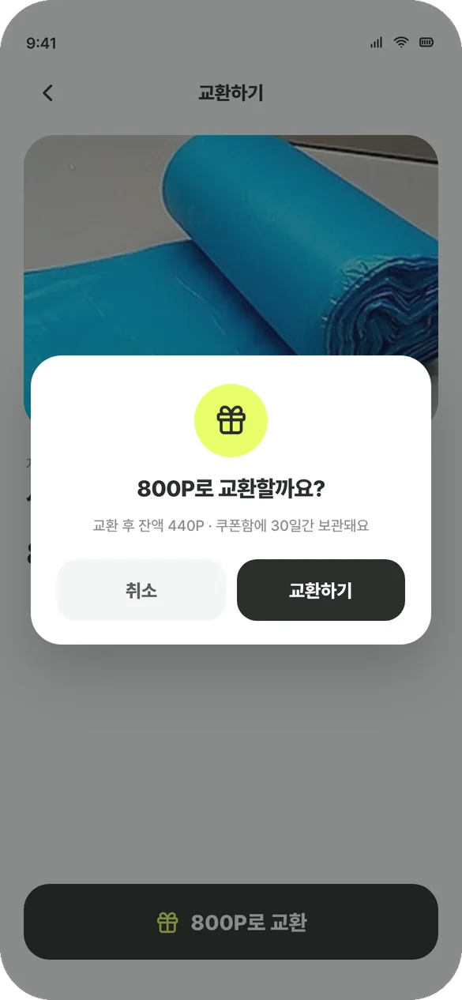
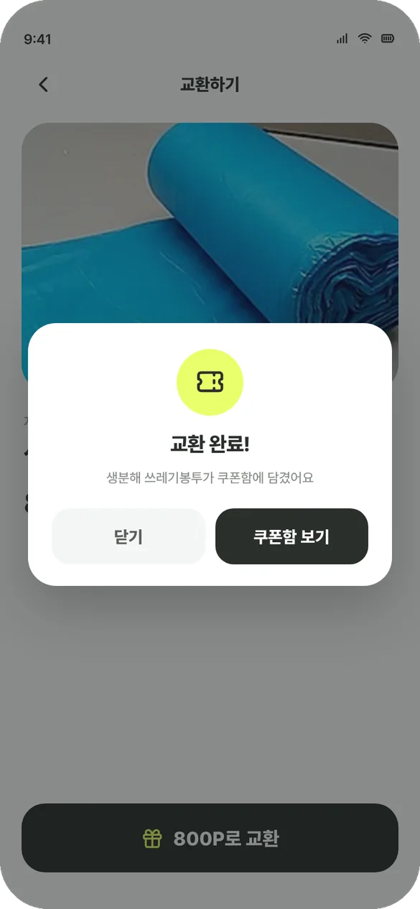
에코백과 집게 같은 에코 아이템부터 아메리카노, 편의점·마트 금액권, 문화상품권까지 포인트로 교환할 수 있습니다. 교환한 쿠폰은 쿠폰함에서 관리합니다.
가까운 그룹에 가입해 함께 걷고, 완료한 활동은 그룹에 바로 공유합니다. 그룹별 수거량과 순위도 확인할 수 있습니다.
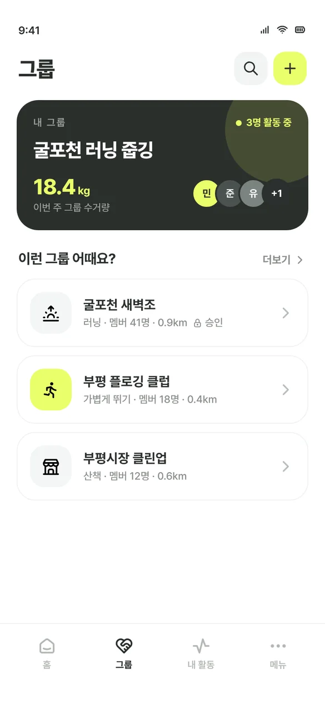
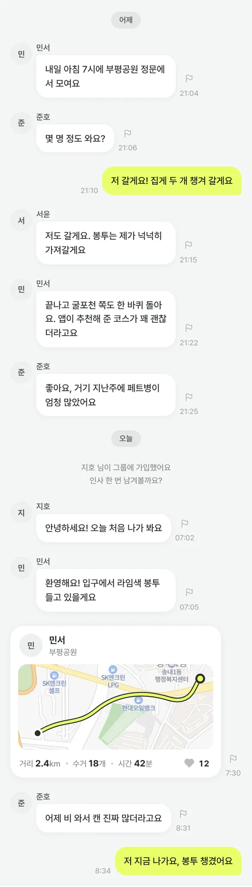
매일 발행되는 환경 뉴스를 AI가 핵심만 요약해 제공합니다. 긴 기사를 다 읽지 않아도 주요 흐름을 파악할 수 있습니다.
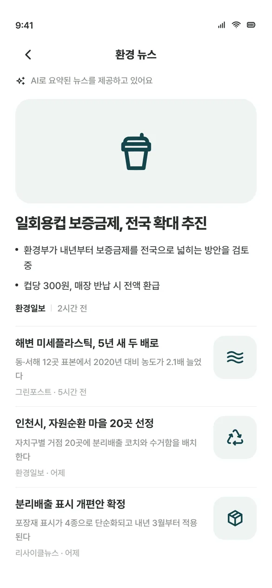
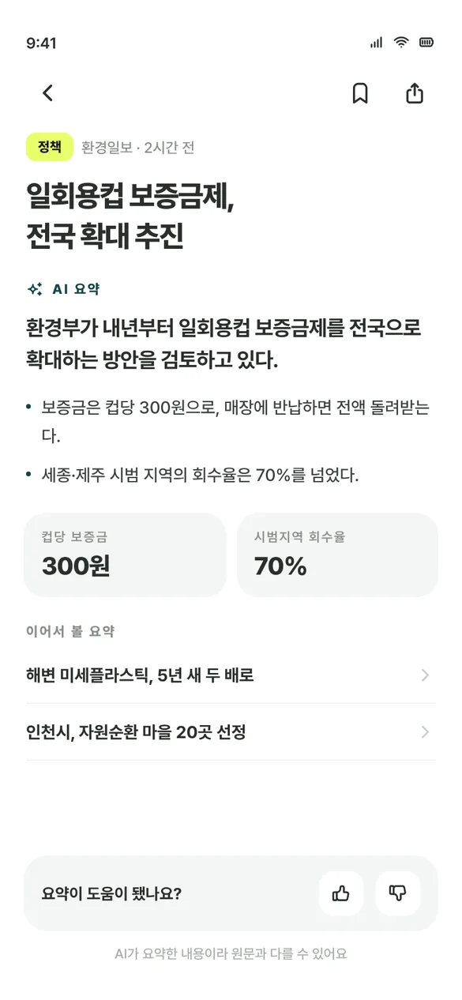
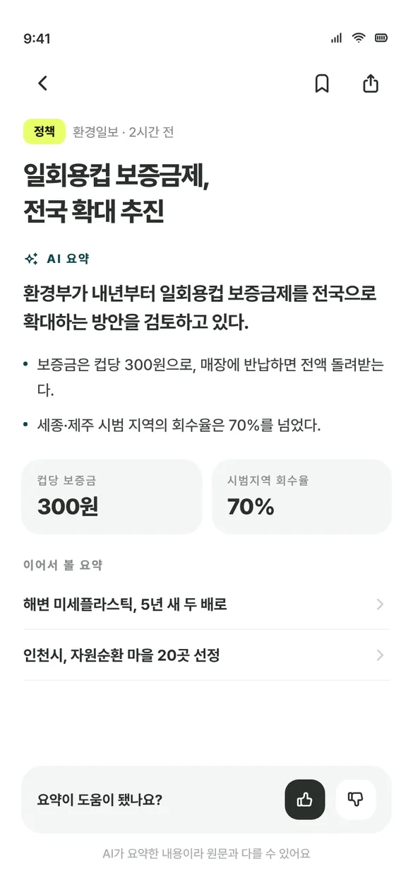
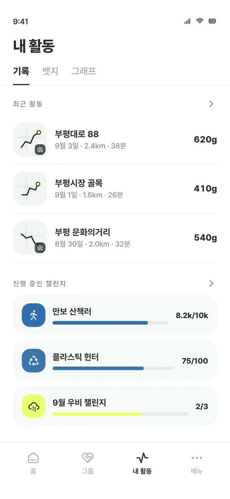
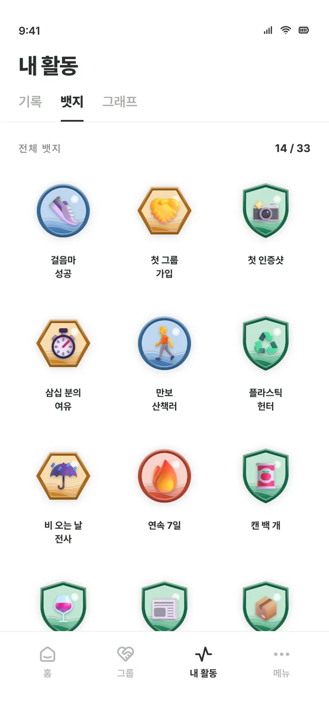
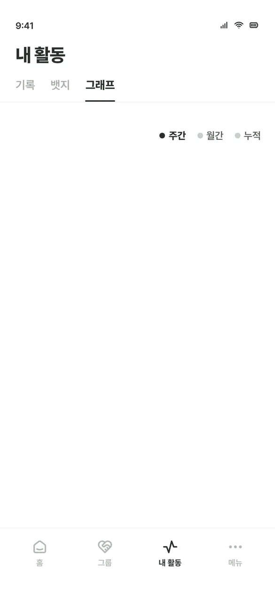
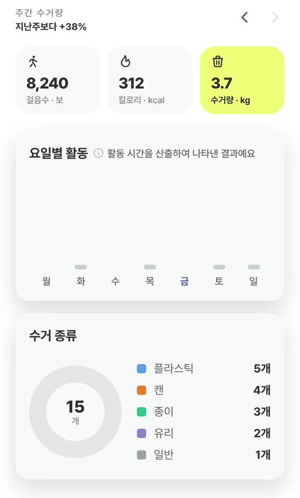
걸음마 성공플로깅 1회 완료
꼭 필요한 곳에만 사용
화면은 차콜과 회색으로 차분하게 두고, 라임은 주요 버튼, 핵심 단어 형광펜, 포인트 적립처럼 시선이 머물러야 할 곳에만 사용합니다. 흰 바탕 위 글자색으로는 쓰지 않고 면이나 어두운 바탕에만 적용합니다.
걷는 동안 보는 화면은 어둡고 크게
플로깅 화면은 어두운 배경에 경과 시간을 가장 크게 표시합니다. 촬영 버튼은 엄지가 닿는 아래 가운데에 있고, 종료는 전원 버튼을 길게 눌러야 합니다.
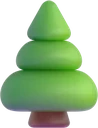
탄소 6.6kg은 소나무 1그루로 표시
탄소 감축량은 소나무 그루 수로, 수거 개수는 포인트로 환산해 보여 줍니다.
쓰레기 종류마다 정해진 고유 색
플라스틱은 파랑, 캔은 앰버, 종이는 초록, 유리는 보라, 일반쓰레기는 회색. 같은 다섯 색을 챌린지와 활동 기록에서도 걸음(파랑), 수거(초록), 그룹(앰버)을 나타내는 데 다시 써서, 앱 전체가 다섯 가지 색 체계를 따릅니다.
촬영 한 번으로 끝나는 수거 기록
위치 기록은 화면이 꺼져도 이어지고, 인증샷을 찍으면 결과가 그룹에 자동으로 공유됩니다.
틀려도 그 자리에서 바로 수정
인식된 개수는 확인 시트에서 고칠 수 있고, 고친 항목에는 "직접 고쳤어요"가 붙습니다. 뉴스 요약에는 "AI가 요약한 내용이라 원문과 다를 수 있어요"라는 안내와 원문 보기 버튼을 함께 제공합니다.
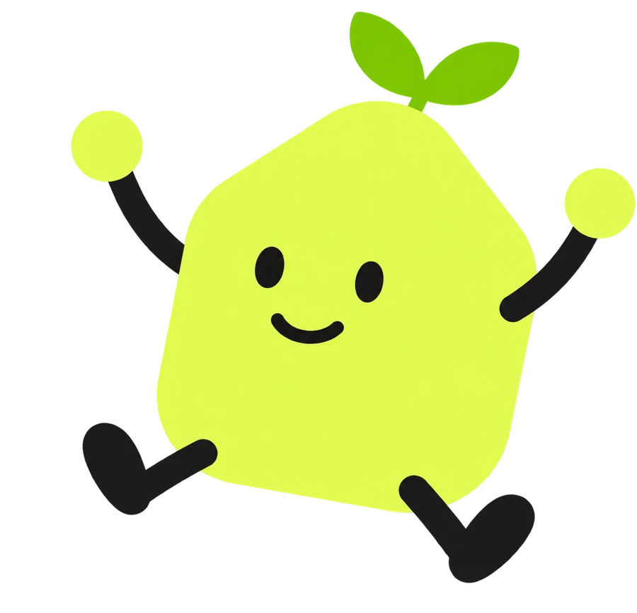
1 2 3쓰레기를 주운 자리에 햇볕이 들면 보도블록 틈에서 새싹이 돋아납니다. 그 새싹이 플로고입니다. 이름은 "플로깅하러, 고!"에서 따왔습니다.